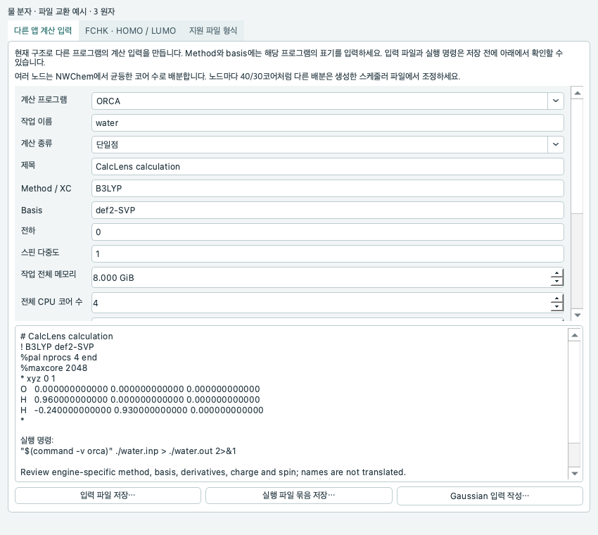
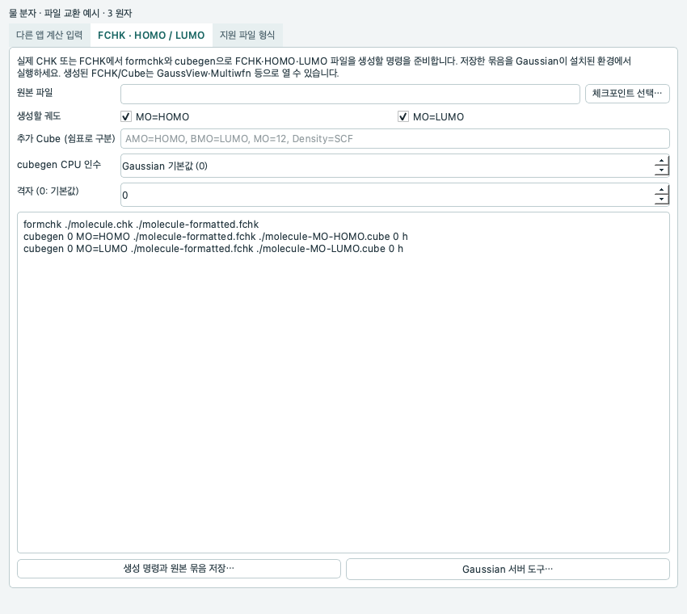
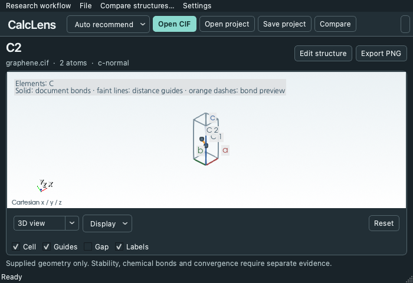
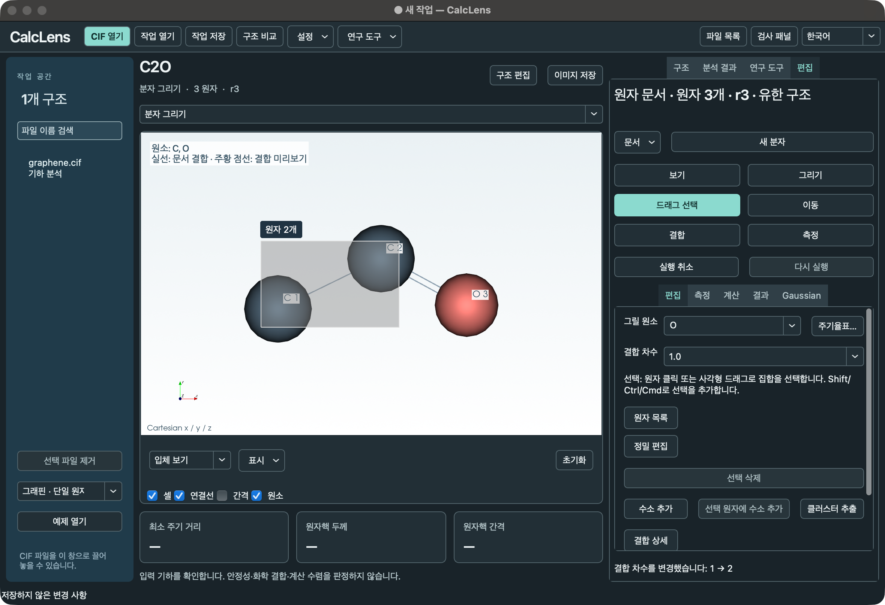

CIF structures & periodic distances
Open a CIF, repeat its cell and select atoms to measure distances, angles and dihedrals. Inspect the neighboring cell and shift behind a short periodic distance, along with layer thickness and gaps.
CalcLens brings crystal inspection, molecular editing and Gaussian result review into one desktop workspace.
A short distance in a CIF only makes sense once you know which atoms and cell images it connects. A Gaussian energy value is easier to interpret when you can find the geometry that produced it.
CalcLens keeps the selected atoms, coordinates and source lines together. Reopening a project restores the structures and calculation conditions you were reviewing.
Features below cover Mac 0.16.0 and Windows 0.13.1. Auto recommend, preflight, energy comparisons, the 0.15.1 fixes and 0.16.0 interchange features apply to Mac. Both support RDKit force fields; Mac setup provides additional engines.
Open a CIF, repeat its cell and select atoms to measure distances, angles and dihedrals. Inspect the neighboring cell and shift behind a short periodic distance, along with layer thickness and gaps.
Save structure-specific settings and notes, then reopen your work. Check the atom mapping before comparing molecular RMSD or periodic displacement in the same cell.
Inspect optimization steps, SCF energies, vibrational modes and IR intensities. Follow a selected result to its source line and coordinates, then prepare a follow-up input from that structure.
Set charge, multiplicity and calculation conditions to prepare an input and job folder. With an SSH profile and lab-specific commands, submit jobs and check their status. Gaussian runs on a separate server.
Import external charge JSON and Cube data for display with a structure. Inspect planar averages and cumulative electron counts from the first total-density block of a supported VASP CHGCAR.
Save structure and density-profile figures as PNG or PDF, with source and display settings recorded alongside them. Export result tables to CSV.
Select, move or add atoms while inspecting CIF structures and molecules in the 3D view. Edit bonds and coordinates, and undo changes.
Both default installations provide RDKit MMFF94s and UFF force fields for finite molecules. Mac also provides GFN2-xTB and PySCF DFT. For periodic structures, first select atoms to form a finite cluster. Periodic and GPU DFT are outside the supported scope.
Auto recommend offers next steps for selected atoms, periodic structures, results and server screens. UFF and MMFF94s check the actual bond graph and charges, identifying unsupported elements, atom numbers and types where RDKit can locate them. Apply a method suggestion, then start a calculation separately.
Inspect saved input and output geometries together with initial and final energies and ΔE. Force-field, xTB and DFT energies retain their categories. Incompatible conditions show a reason instead of a ranking. Verified pairs of UKS optimizations can show an adiabatic spin gap.
Review support for 13 structure formats and prepare input and run bundles for ORCA, Q-Chem, NWChem DFT, Psi4 and xTB. These external programs require separate installation; saving a bundle does not start a calculation.
Enter Gaussian route examples, memory, cores and server nodes. Prepare FCHK conversion and HOMO/LUMO Cube commands from a real checkpoint, and select a dataset when a Cube contains multiple orbitals.
Submission to a live laboratory Gaussian server has not yet been verified. Interpret results in the context of their inputs and calculation conditions.
Select a screenshot to view it at full size.

Choose a structure with Open files in the main toolbar or File → Open molecular geometry…. View the Open files screen.
Use File → Input for other calculation apps… to prepare finite-molecule inputs and commands for ORCA, Q-Chem, NWChem DFT, Psi4 and xTB. Enter each program’s own method and basis names. Save the input, run script, settings record and optional Slurm or PBS submission example together for review.
External calculation programs require separate installation. Saving a bundle starts no calculation or server submission. The multi-node template distributes cores evenly for NWChem; adapt other allocations and launch settings to your site.

Apply and edit either Gaussian route example: #p B3LYP/6-31G(d) Opt SCF=XQC or #p APFD/6-311+G(2d,p) Opt Freq. Set memory, core count, %CPU and server nodes via %LindaWorkers. Choose either %NProcShared or %CPU; the Linda core setting applies to each worker.
Prepare a formchk conversion from an existing CHK and cubegen 0 MO=HOMO and cubegen 0 MO=LUMO commands from a CHK or FCHK. Run the commands separately where Gaussian is installed. Save an imported FCHK or Cube unchanged, and explicitly choose which dataset to display when a Cube contains multiple orbitals.

Auto recommend follows the active structure and selection. It leads to atom measurements, finite-cluster preparation, geometry or electronic-method review and result comparisons. Use Command+Shift+R on Mac. Opening the menu starts no calculation and does not transfer or move server files.
Mac 0.16.0 download details
Choose New molecule and click the canvas to place carbon. Drag from that atom into empty space to add a new atom and a single bond. Pick oxygen from the periodic table to add it. Double-click a bond line to cycle through single, double and triple bonds. Use Drag select to select several atoms. View the periodic table.
Download 0.16.0 for Apple Silicon Mac
Captured on Mac during 0.13 development, this view shows an atom being moved in an illustrative graphene vacancy model. The model is neither an experimental structure nor an optimized result.

Inspect the SCF history and printed force and displacement criteria in a public Gaussian example. Select a frame to follow its coordinates and source references.
These 13 formats are available on Mac 0.16.0. Review the information-loss warnings shown after export. Save a CalcLens project or .atomic.json too when atom IDs, constraints, electronic state and provenance must be retained.
ibrav=0 input. Pseudopotentials and spin settings are not imported.For shared extensions such as .inp and .in, choose the input format. Choose a Cube with Open files or Open molecular geometry… to open it in the field-analysis screen. For supported Cube files, the display limits are 32 MiB, 1 million grid points and 4 million scalar values in total; atom and dataset counts are also limited. Use the server file browser to download checksum-verified originals above these limits for use in another app.
In the expanded graphite cell from COD 9011577, the shortest periodic distance is 1.42258 Å and the gap between nuclear planes is 3.3555 Å. A separate unrelaxed single-sheet derivative has a chosen repeat height of 20 Å. This is a different example from the illustrative graphene model pictured above.
For the public cclib divinylbenzene example, optimizer step 3 refers to the energy on source line 1857. A follow-up input prepared from that geometry retains the frame after the project is reopened.
Key changes from 0.1.0 to the current public builds. Versions 0.1.0 and 0.4.0 were development versions, not separate releases.
Started as a tool for checking CIF atomic positions, cells, periodic distances and layer geometry.
Added Korean and English packages and guides, with CSV and JSON report exports.
Added nearest-pair evidence, multi-CIF comparison and source information in reports.
Added saved review projects with settings and notes, and provided Windows executables.
Developed project editing, review history, selected-atom distances and two-structure comparison.
Introduced an offline 3D workspace with rotation, zoom and cell repetition.
Improved structure display and image export, and added import of external charge and electronic-surface data.
Saved electronic datasets and view settings in projects and added a P1 preparation preview for supported CIFs.
Reorganized the workspace around the selected structure and its review results.
Introduced desktop apps for Windows and Apple Silicon Mac and added Gaussian log review.
Improved retained density-difference records and display settings, and provided a Windows folder package.
Added Gaussian and VASP output comparison, Cube and CHGCAR density analysis, and publication-figure export.
Expanded distance, angle and dihedral measurements, Gaussian input preparation, frame review and server workflows.
Improved Windows server login, view-state restoration and first-frame display.
Added molecular editing, saved structures, condition-aware energy comparison and finite small-molecule CPU calculations on Mac.
Introduced a shared 3D workspace for reviewing and editing structures, and added RDKit force-field calculations to the default Windows setup. Mac also provides GFN2-xTB and PySCF DFT.
Ships native modules on Mac and Windows. Fixed supercell creation, view presets and editing-mode selection. Mac now keeps the backup outside the Qt plugin search path so the accessibility fix is loaded. The new terms allow free sharing of unchanged official packages.
A new molecule opens in Draw mode. Click to place carbon and drag from it to add a bonded atom. Narrow windows let you scroll to both the tools and calculation controls.
Choose from 118 elements, drag to select atoms, add hydrogens to a selection and double-click a bond to change its order. Converged optimizations open as new documents. The SSH file browser supports copying and transferring files.
Added task-aware Auto recommend, per-atom UFF/MMFF preflight and method review against installed engines. Inspect before/after geometries and energies, with explicit compatibility checks and limits when comparing results.
Added checks for basis sets that require ECPs and revalidation of the final optimization geometry. Calculations preserve edits made after submission, saved result views restore correctly, and Gaussian exports reject invalid form values.
Expanded Gaussian route examples and resource settings, FCHK and Cube originals, and orbital-file preparation. Added structure exchange and input and run bundles for five external calculation programs.
Select a package for your operating system. On first launch, choose Install to download its runtime.
For Apple Silicon with macOS 15 or later. Open the DMG and copy the app to Applications.
Download DMG ↓For Windows x64. Extract the complete ZIP and launch CalcLens.exe.
Setup obtains RDKit UFF and MMFF94s. The default Mac setup also provides GFN2-xTB and PySCF DFT.
Download ZIP ↓The Mac app is ad-hoc signed and has not been notarized by Apple. The Windows launcher is unsigned. Your operating system may show a warning; verify the download source and SHA-256 digest.
Installation & licenses · Mac SHA-256 · Mac file inventory · Windows SHA-256 · Mac release files · Mac Qt source (unchanged from 0.14.0) · Release verification